CS180 · Saksham
I used a parrot photo and mixed it with noise using t. At a small t, the image is mostly noise. At t = 0.25 I can barely make out the beak, but by 0.75 it is clearly a parrot. The parrot’s colors and details get weaker as more noise is mixed in.
def interpolate(image, noise, t): return (1-t)*noise + t*image
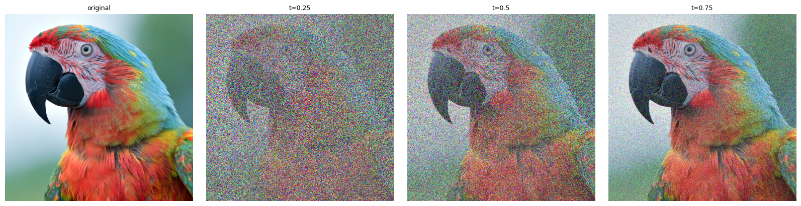
I tried Gaussian blur to get rid of the noise. At t = 0.25, σ = 8 removes most of the grain, but it turns the parrot into colored blobs. I lose the eye and feather details. A smaller blur leaves noise behind, while a bigger one smears the whole image.
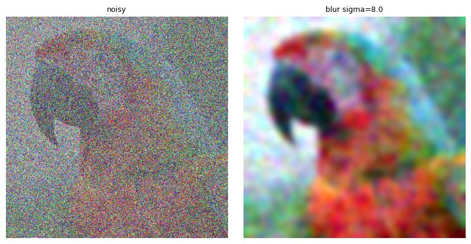
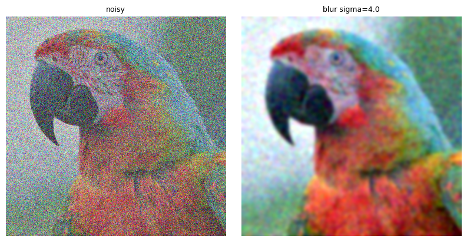
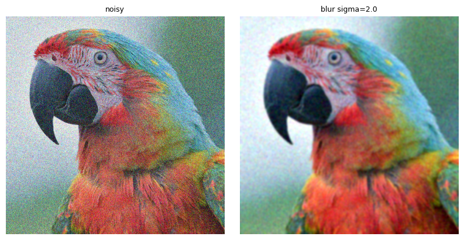
I took the noisy image and used the model’s predicted velocity to make one big step toward a clean image. At t = 0.25, this looks much better than blur. The beak and eye are sharp again, but the feathers are flat and the chest colors look guessed. It looks like a real parrot, just not exactly my parrot.]
def one_step_denoise(x, t, condition, predict_velocity): return x + (1-t)*predict_velocity(x,t,condition)
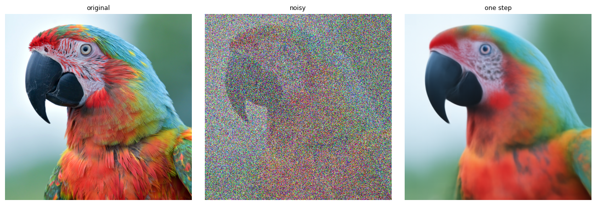
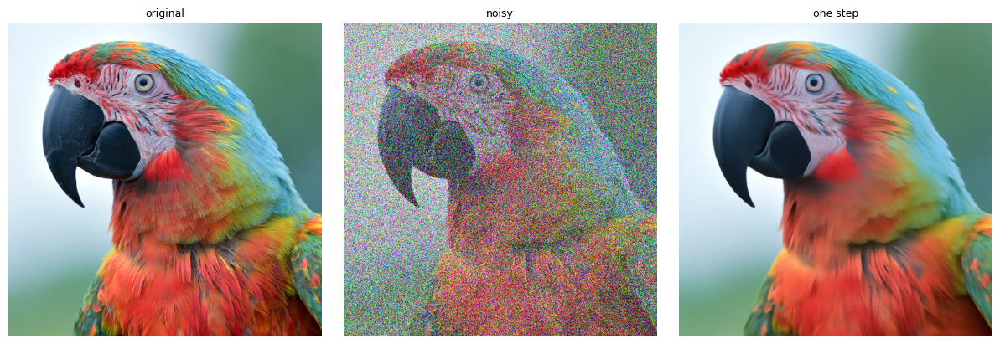
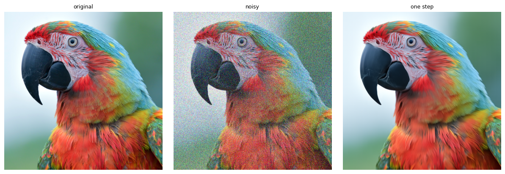
I compared the model’s predicted update with the update I know from the original image. The prediction looks like a smoother, blurrier version. The error is strongest around the feather edges, beak, and eye, while the plain background has almost no error. I think the model understands the big shapes, but misses the small texture.
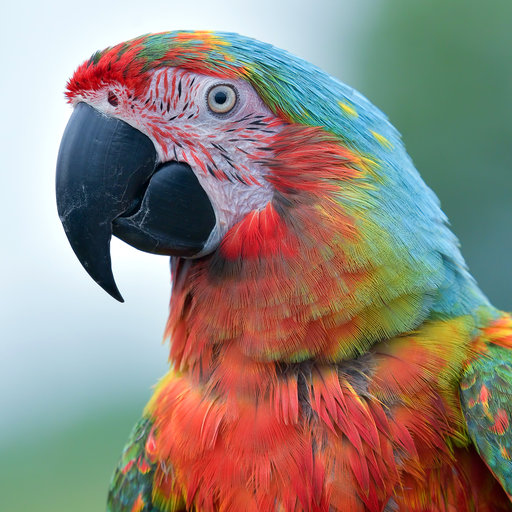
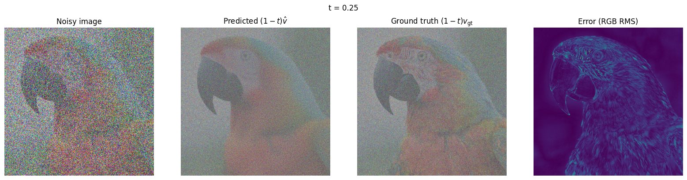
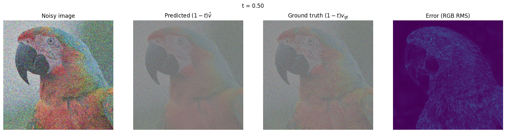
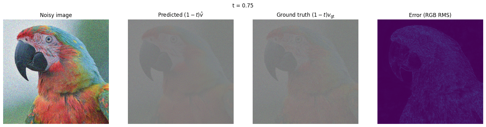
My first Euler sampler had a bug in the leftover step, and floating point rounding made that step harder to handle. I fixed it so the sampler takes small steps and then a shorter final step to reach t = 1. In the comparison, Euler looks closest to the original parrot. More feather texture comes back than in the one-step result, and blur is clearly the worst.
def euler_sample(x_start, t_start, step_size, velocity):
out = [(t_start, x_start)]
for i in range(int((1-t_start)/step_size)):
x_start = x_start + (step_size)*velocity(x_start, t_start + i *step_size)
if i % 4 == 0:
out.append((t_start + (i+1) *step_size, x_start))
if abs(1 - (t_start + (i+1) *step_size)) > 0:
x_start = x_start + (1 - t_start - (i+1) *step_size)*velocity(x_start, t_start + (i+1) *step_size)
out.append((1, x_start))
if out[-1][0] != 1:
out.append((1, x_start))
return x_start, out
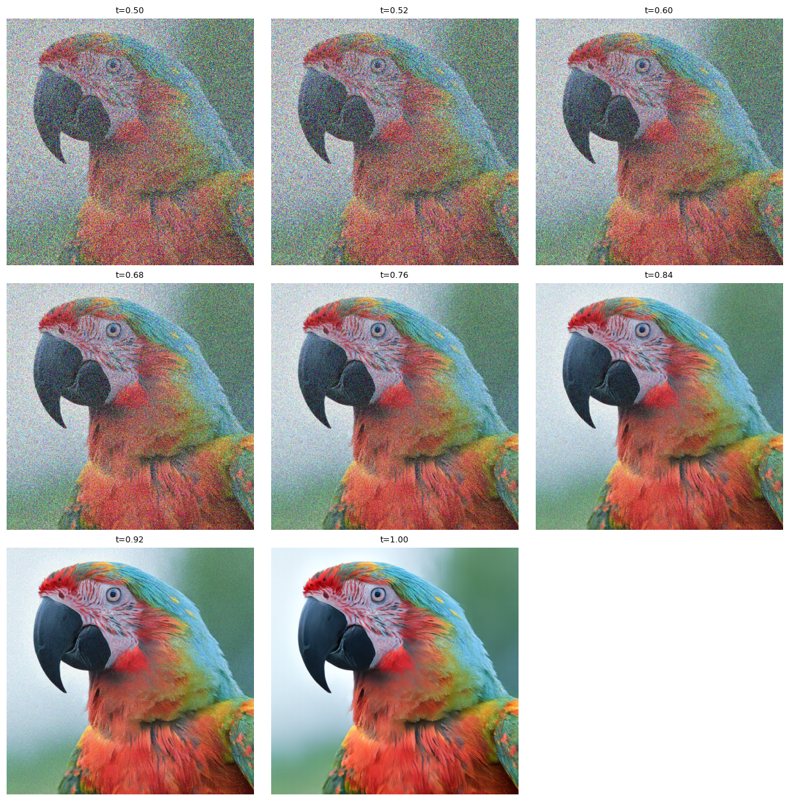
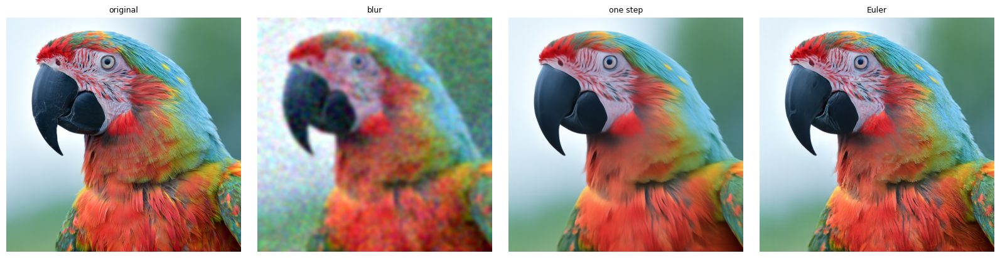
I used the prompt “a high quality photo” and got five portraits of people, even though I never asked for a person. The results were not really high quality either. Seed 180 has almost no face, and seed 183 looks distorted. The model seems to have a strong idea of what this vague prompt means, but it does not always make it well.
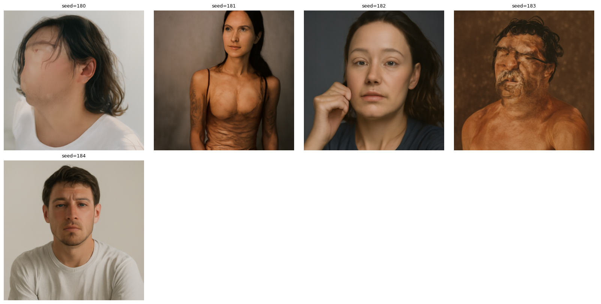
I used classifier-free guidance with w = 7 and kept the same starting noise as before. It pushes the model harder toward the prompt by comparing the prompted prediction with an unprompted one. This time the faces are clean, centered, and well lit, with no broken faces. But they also look very similar: same kind of pose and plain background. I got better quality, but less variety.
def cfg_velocity(x, t, condition, w, predict_velocity, null_condition=''): return predict_velocity(x,t,condition) + w * (predict_velocity(x,t,condition) - predict_velocity(x,t,null_condition))
I added noise to my monkey drawing at different starting times, then let the model edit it. At t = 0.02 to 0.06, the monkey disappears and I get a white mug or a sheet of paper. Only the white and gray colors seem to survive. At 0.10 to 0.14 it looks like crumpled cloth. Around 0.25 the monkey comes back as a cleaner sketch, and at 0.5 it stays very close to my drawing. It seems to need about t = 0.25 before it really sees the monkey.
def edit(image, noise, t_start, condition, predict_velocity, w=7, step_size=0.02):
x_start = (1-t_start)*noise + t_start*image
for i in range(int((1-t_start)/step_size)):
velocity = cfg_velocity(x_start, t_start + i *step_size, condition, w, predict_velocity)
x_start = x_start + (step_size)*velocity
if abs(1 - (t_start + (i+1) *step_size)) > 0:
x_start = x_start + (1 - t_start - (i+1) *step_size)*cfg_velocity(x_start, t_start + (i+1) *step_size, condition, w, predict_velocity)
return x_start

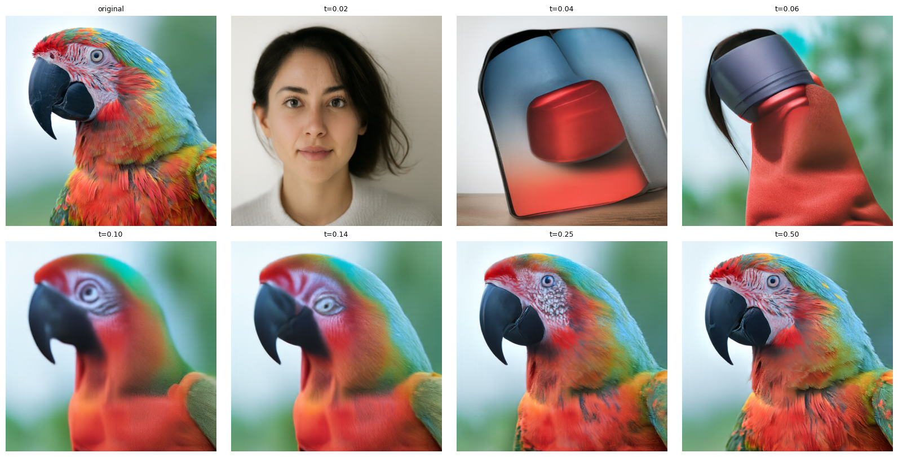
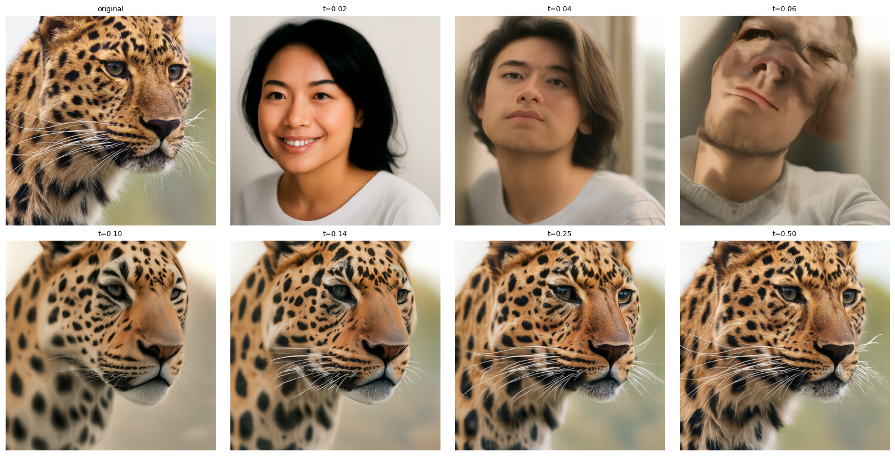
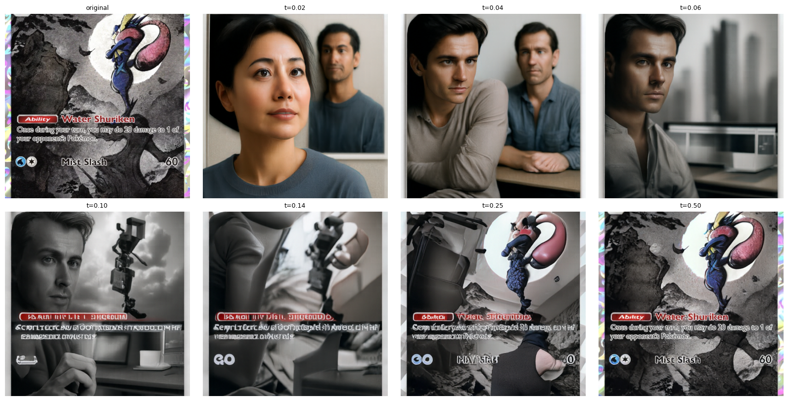
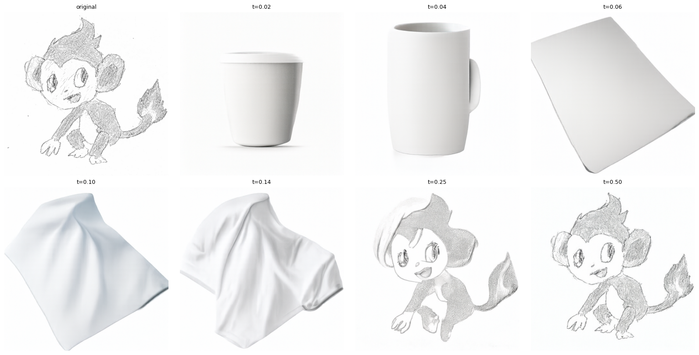
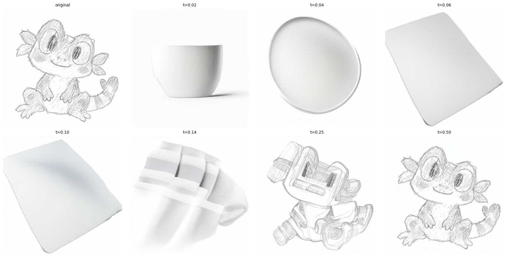
I changed the prompt to see how much of the original image would survive. For the parrot-to-turtle edit, t = 0.02 gives me a turtle in mud with basically no parrot left. At 0.04 to 0.06 it turns into a strange cartoon turtle. Around 0.10 to 0.14 is my favorite, because the turtle keeps some of the parrot’s colors and pose. By 0.5 it is mostly the parrot again. The Campanile-to-mustard-bottle edit had a similar sweet spot, around 0.06 to 0.14.
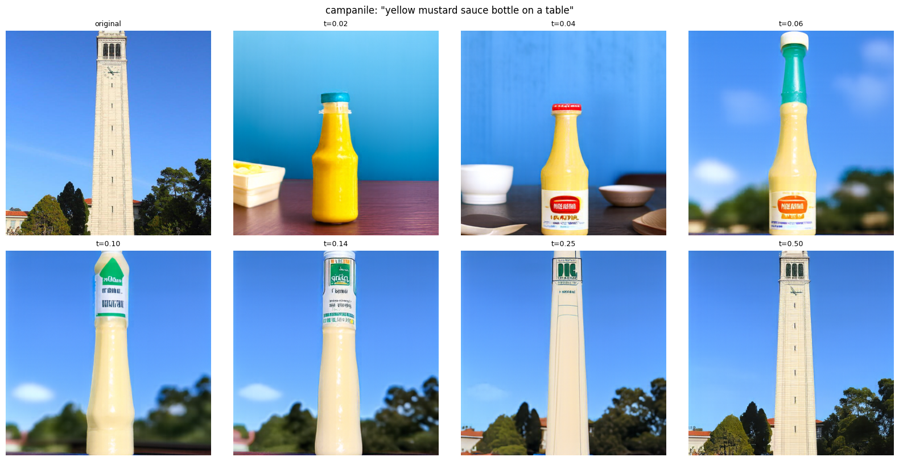
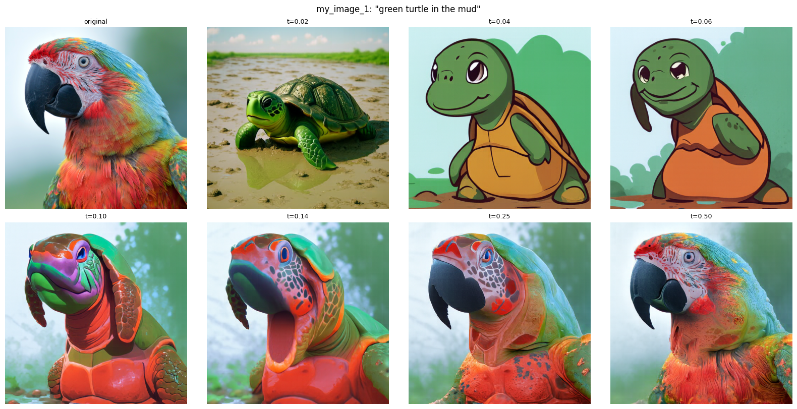
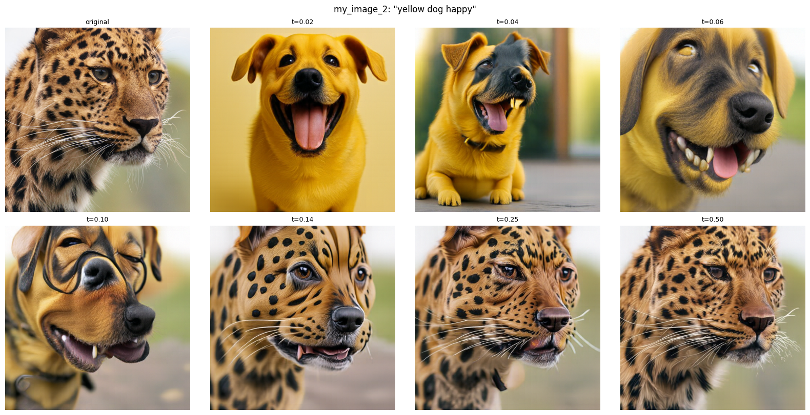
For each step, I predicted an update for the upright prompt and another for the flipped prompt. I rotated the second update back and averaged them. My first tree and green-fire tries did not work. The tree took over, and flipping it just showed an upside-down tree. I think “green fire” was too unusual for the model to make a strong second image. I switched to shapes that could bend into each other more easily: a jellyfish and coral reef, then a river delta and canyon. I also kept the style and colors similar in each pair.
def visual_anagrams(noise, condition_a, condition_b, predict_velocity, w=7, step_size=0.02):
x_start = noise
for i in range(int(1/step_size)):
velocity = (cfg_velocity(x_start, i*step_size, condition_a, w, predict_velocity) + rotate180(cfg_velocity(rotate180(x_start), i*step_size, condition_b, w, predict_velocity)))/2
x_start = x_start + (step_size)*velocity
if abs((1 - (i+1) * step_size)) > 0:
v_b = cfg_velocity(x_start, (i+1)*step_size, condition_b, w, predict_velocity)
x_start = x_start + (1 - (i+1) *step_size)*(lowpass(cfg_velocity(x_start, (i+1)*step_size, condition_a, w, predict_velocity)) + v_b - lowpass(v_b))
return x_start
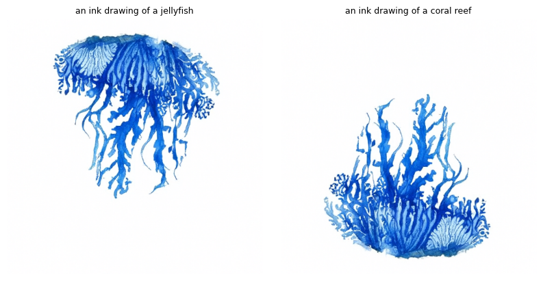
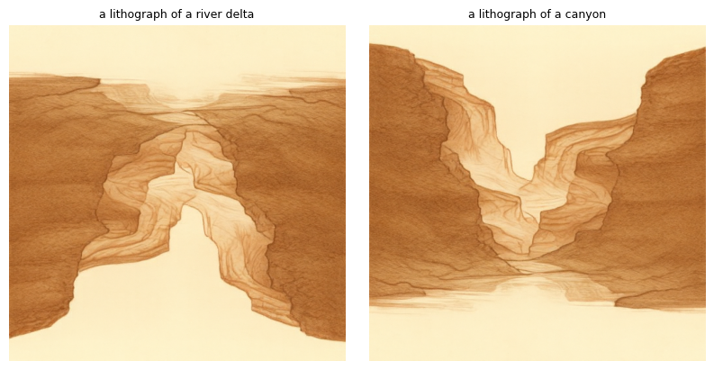
I mixed the broad shapes from one prompt with the fine details from another. Up close, the first image looks like a yellow bird, especially the eye, feathers, and little legs. At 64 pixels it becomes more of a simple yellow shape that can suggest a submarine, though I still see the bird. The second image is clearly a chair up close. When it is small, its tall shape can hint at a giraffe, but this one still reads mostly as a chair to me. The change with distance is weaker than I expected.
def make_hybrids(noise, condition_a, condition_b, predict_velocity, w=7, step_size=0.02):
x_start = noise
for i in range(int(1/step_size)):
v_b = cfg_velocity(x_start, i*step_size, condition_b, w, predict_velocity)
velocity = lowpass(cfg_velocity(x_start, i*step_size, condition_a, w, predict_velocity)) + v_b - lowpass(v_b)
x_start = x_start + (step_size)*velocity
if abs((1 - (i+1) * step_size)) > 0:
x_start = x_start + (1 - (i+1) *step_size)*velocity
return x_start
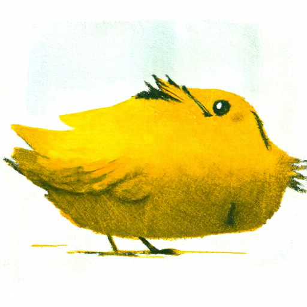
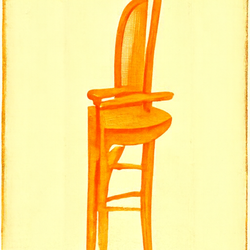
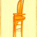
I built a UNet to take a noisy digit and predict a cleaner one. The downsampling blocks shrink the image so the model can look at the whole digit, and the upsampling blocks bring it back to its original size. The skip connections carry over details from the earlier blocks, so the output does not have to rebuild everything from the smallest version.
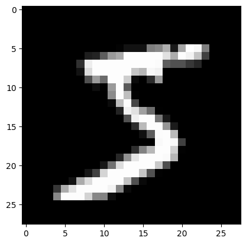
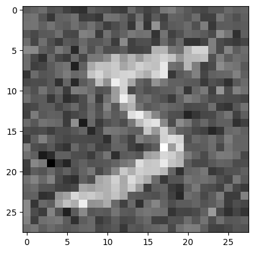
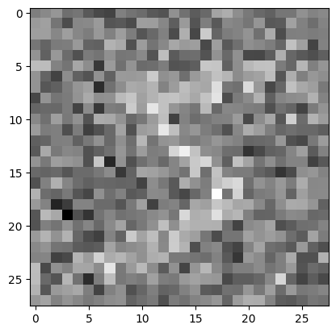
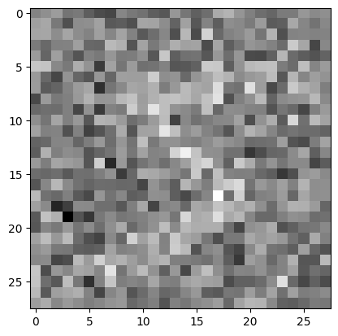
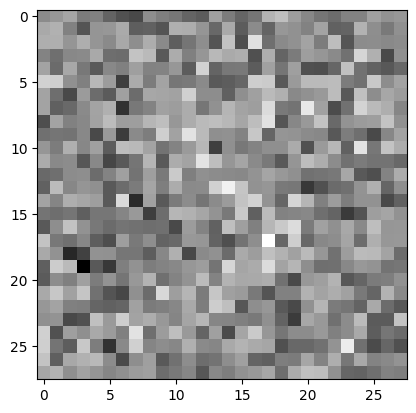
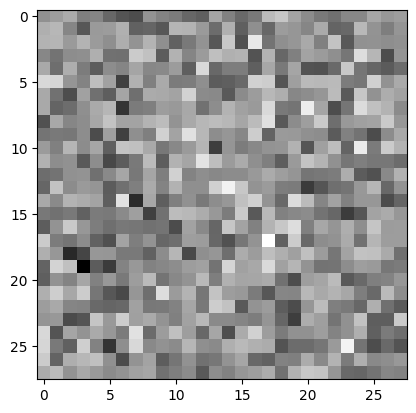
I trained the denoiser at σ = 0.5 with D = 128, batch size 256, Adam, and a learning rate of 1e-4 for 5 epochs. My loss plot first showed only 2 points, then 5, because I had the append in the wrong place. After fixing it, I could see the loss drop quickly from about 0.07 to 0.01 and then flatten out. The cleaned digits are readable, but still a little blurry. Thin strokes on digits like 4 and 5 have small smudges.
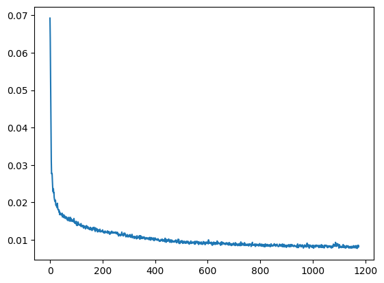
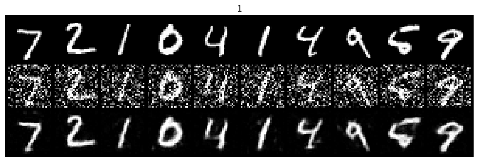
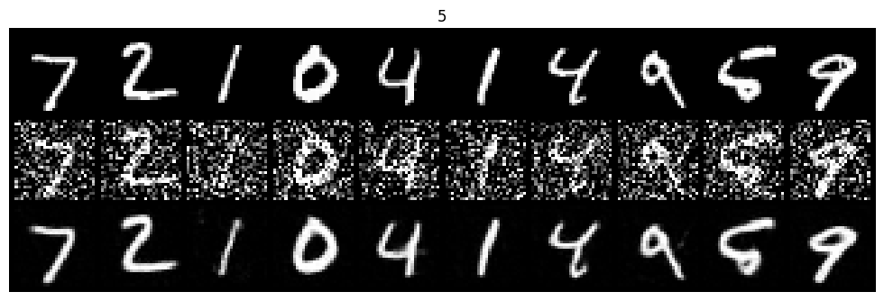
I tested the denoiser on noise levels it had not trained on. It handles values below σ = 0.5 pretty well. At σ = 1.0, I can still read the 7, but it looks blotchy and has specks left over. That makes sense since the model only learned to clean images at σ = 0.5.
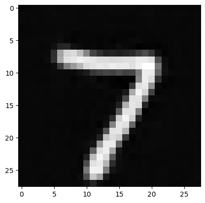

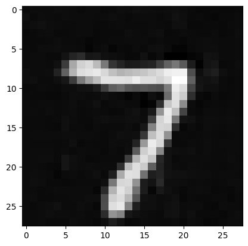
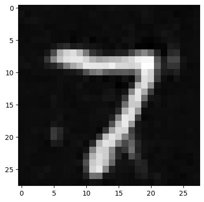
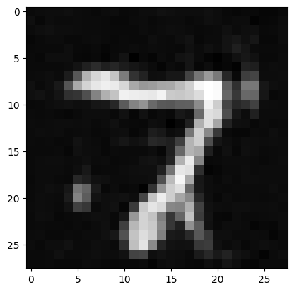
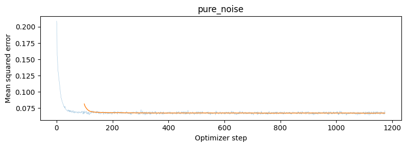
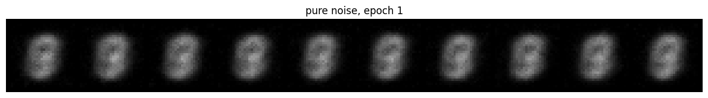
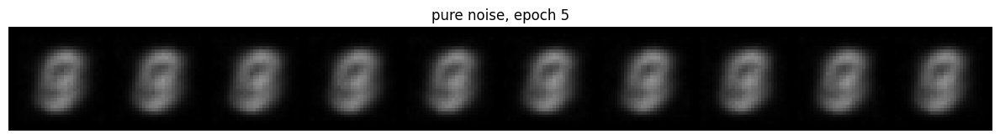
When I gave the model pure noise, every output looked like the same blurry blob. There is no digit left in the input for it to recover. Since I trained with mean squared error, its safest guess is something like the average of all the training digits. So it makes a vague digit-shaped patch instead of inventing a clear number.
I added time conditioning so the UNet knows how noisy the image is at each step. I passed t through two FCBlocks and used their outputs inside the network. That way it does not have to make the same kind of update at every point in the sampling process.
I trained the time-conditioned model with D = 64, batch size 64, Adam, and a starting learning rate of 1e-2. I used an exponential scheduler to lower the learning rate over 10 epochs. The loss falls fast at the start and then changes much less, which matches how the samples improve.
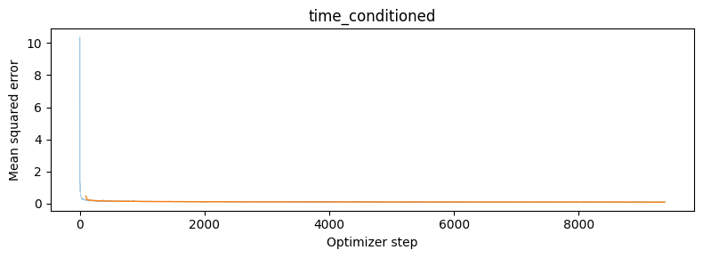
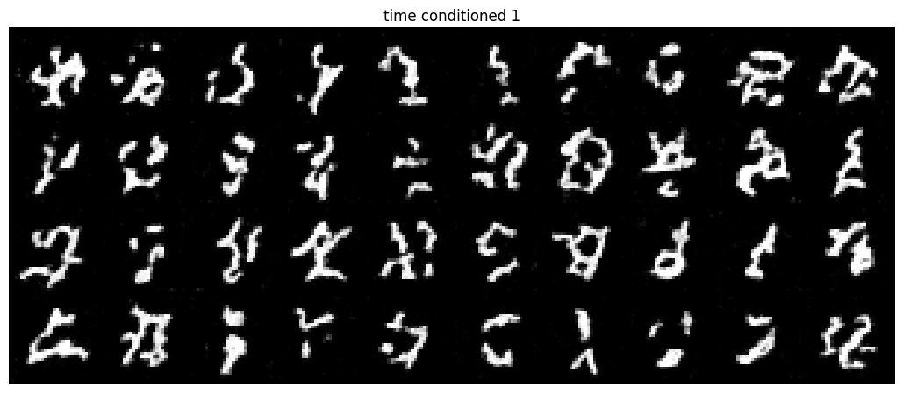
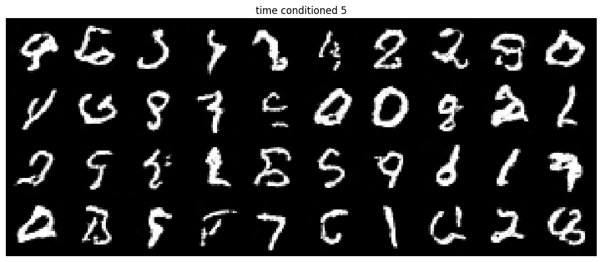
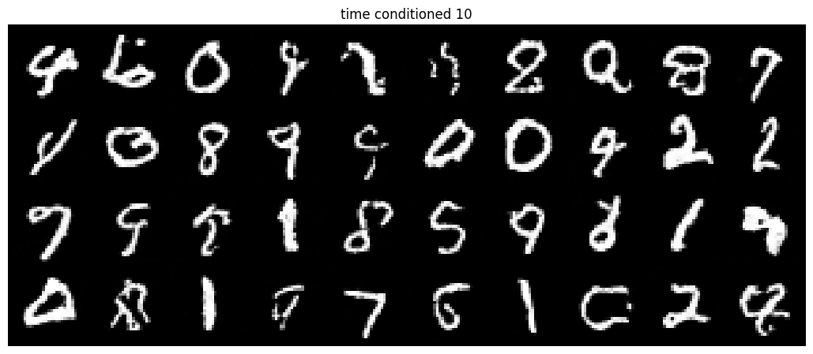
At epoch 1, my samples are mostly squiggles and I cannot really call them digits. By epoch 10, most of them are readable. Some are still odd, especially a few half-formed 4s and 8s, but it is a big change from the first epoch.
I added a one-hot vector to tell the model which digit to make. Two more FCBlocks put that class information into the UNet. I also dropped the class input 10% of the time during training, so the model learns both a conditioned and an unconditioned prediction. I need both of those for classifier-free guidance when sampling.
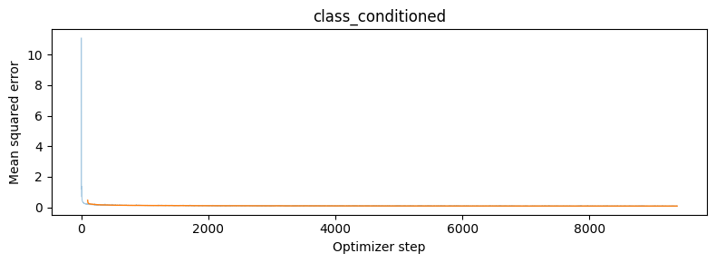
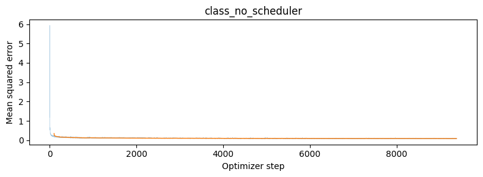
I sampled with a guidance scale of 5 and made four examples of each digit from 0 to 9. By epoch 10, the rows are clean and I can tell which digit each column is supposed to be. Some digits have different handwriting, but the class mostly stays correct.
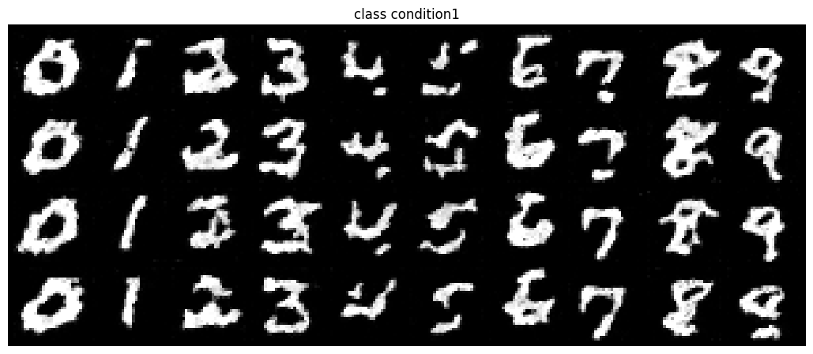
I removed the scheduler and used a constant learning rate of 5.5e-3, between the original high and low rates. I expected the results to look more unstable, but after 10 epochs they look almost the same. The loss drops quickly in both runs, and both give readable rows of digits. For this short run, I cannot see a big benefit from the scheduler just by looking at the final images.
The biggest thing I noticed is that a model can make an image look convincing without actually recovering the original details. My one-step parrot looked good, but some feathers and colors were made up. Taking more Euler steps helped, while blur just erased details. I also saw the tradeoff with guidance: it fixed the faces, but made the results more alike. In Part B, the pure-noise test helped me understand why a model trained with squared error makes an average-looking blob when the input gives it no clue. And the learning rate experiment surprised me, because the simpler constant rate worked almost as well in the time I trained it.